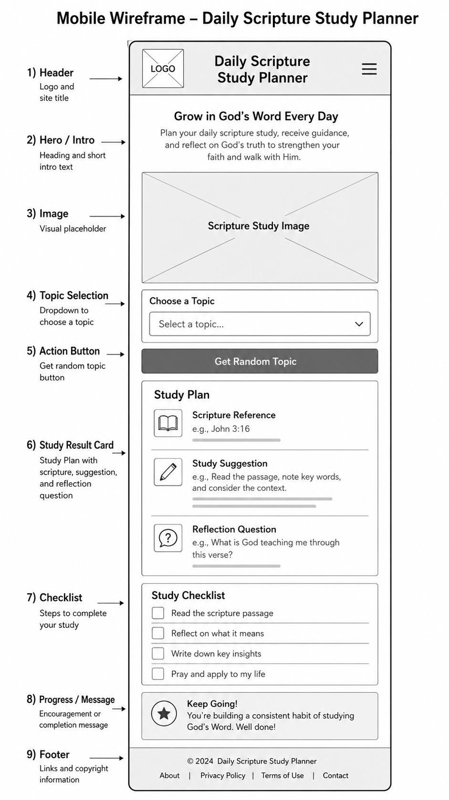
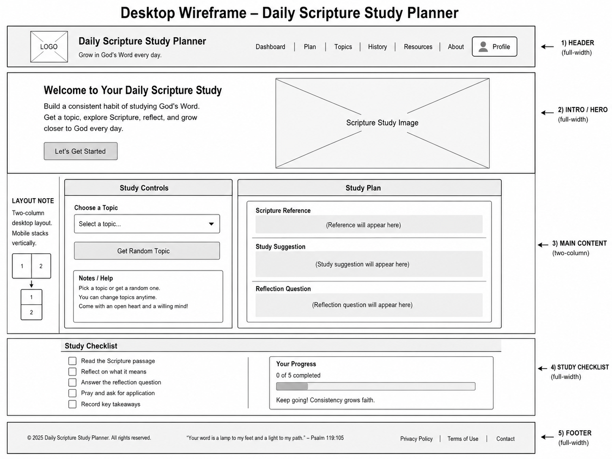

Overview
Purpose
The purpose of this web app is to help students and young adults create a simple daily scripture study plan. Users will be able to choose a study topic and receive a scripture, a short study suggestion, and a reflection question. The app will help users make scripture study more organized, personal, and easy to apply during the week.
Audience
The audience for this app is BYU-Idaho students and young adults who want a simple way to study the scriptures. The app is designed for people who may not have much time but still want meaningful daily spiritual study.
Dynamic elements
React will be used to render the dynamic content below the static header and hero section. The app will display scripture study topics from an array of objects. Users will select a topic or click a random topic button, and React will update the study plan card with a scripture reference, study suggestion, reflection question, and checklist progress. The project will use React state, event handling, conditional rendering, objects, arrays, and array methods such as map(), find(), and filter().
Branding
Website Logo
The logo will be a simple text-based logo that says "Daily Scripture Study Planner" with a clean and peaceful design.
Hero Section Image
The hero section will include an image that represents scripture
Style Guide
Color Palette
Palette URL: https://coolors.co/0f172a-f8fafc-d4af37-3b82f6-64748b| Primary | Secondary | Accent 1 | Accent 2 |
|---|---|---|---|
| #0F172A | #F8FAFC | #D4AF37 | #3B82F6 |
Pseudocode for your project
The index.html page will include the basic static structure of the website. The header and hero section will be written directly in HTML because they do not need to change when the user interacts with the app. The hero section will include the title, short introduction, and scripture study guide image.
Below the hero section, index.html will include an empty container element with an id such as "app". React will use this container to render the dynamic part of the page.
In the React JavaScript file, create an array of study topic objects. Each object will include a topic name, scripture reference, study suggestion, reflection question, and checklist items.
Create a main React component called App. Inside this component, use state to store the selected topic, the displayed study plan, and the checklist progress.
When the React app first loads, display a topic selection area, a random topic button, an empty study plan card, and a checklist section. Use the array of topic objects to create the topic options dynamically.
When the user selects a topic, React will listen for the change event. If no topic is selected, the app will show a helpful message asking the user to choose a topic. If a valid topic is selected, React will find the matching topic object and update the study plan card.
When the user clicks the random topic button, React will choose one random topic from the array and update the page with that topic's scripture reference, study suggestion, and reflection question.
When the user checks or unchecks checklist items, React will update the checklist progress. If all checklist items are completed, the app will show a completion message. Otherwise, it will show an encouragement message to keep going.
The React code will use objects, arrays, array methods such as map(), find(), or filter(), conditional rendering, event listeners, and DOM updates through React rendering.
Wireframes
The app will have one main page. The layout will be mobile first. On small screens, the content will appear in one column. On larger screens, the study selection and study result sections may appear side by side.
Landing page
The landing page will include a header, a short introduction, an image related to scripture study, a topic selector, a random topic button, a study result card, and a checklist for completing the study.
Mobile Wireframe Description
Mobile layout: header at the top, introduction text, scripture image, topic dropdown, random button, study card, and checklist stacked vertically.

Desktop Wireframe Description
Desktop layout: header at the top, introduction section, then a two-column layout with the topic controls on the left and the study result card on the right. The checklist will appear below the main content.
